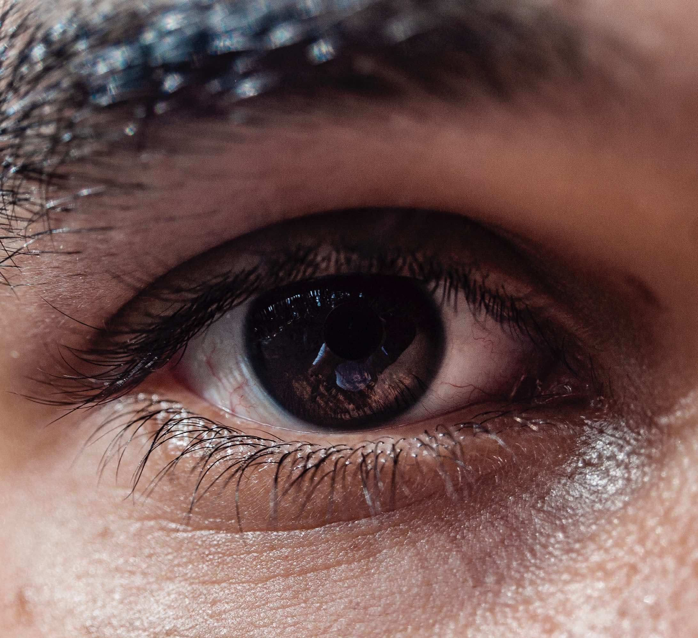
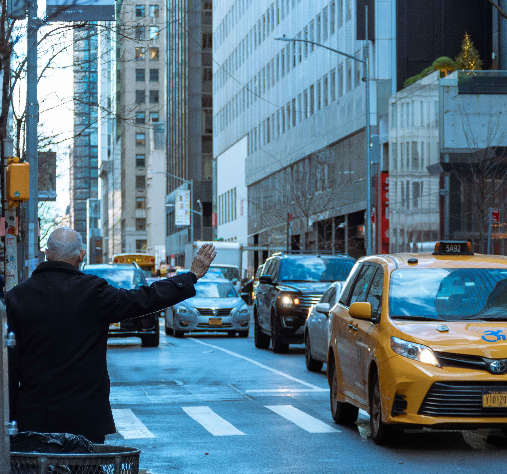

Research lead by Dr. Kosovicheva
Localization and Individual Differences
One of the key tasks that the visual system accomplishes is determining where things are in the world, whether that is where a tennis ball bounced on the court, or where a brief alert appeared on your computer screen. A range of different factors influence perceived location, such as motion, eye movements, spatial attention, and stimulus history (i.e., what you have seen previously). Dr. Kosovicheva's work has also shown that basic location judgments vary considerably between individuals, and that these differences are stable over different measurement methods and consistent over time. A major focus of the lab is to work towards an integrated understanding of how the brain determines where objects are in the world, and how these differences vary between individuals.
This work is funded by an NSERC Discovery Grant to Dr. Kosovicheva

Visual impairments
Another major focus of Dr. Kosovicheva's work is using psychophysical methods to better understand visual impairments, particularly those that affect spatial visual processing. The lab is interested in how we can apply psychophysical methods and eye tracking techniques to better assess disorders that affect binocular vision, such as strabismus (eye misalignment) and amblyopia ("lazy eye"). A more complete understanding of the underlying visual functions can also help guide diagnostic tools and treatments for these disorders.
This work was previously funded by a NEI F32 award to Dr. Kosovicheva.
Research lead by Dr. Wolfe
Driving and Driver Behaviour
Driving is an inherently visual task, and requires us to understand how our environment is changing if we are to stay safe on the road. In particular, the lab is interested in how drivers acquire the visual information they need to stay safe, or what information leads to drivers’ situational awareness. A particular focus of the lab’s work is on the human side of self-driving vehicles, or what the car needs to know about the person in the driver’s seat to be safe on the road. Dr. Wolfe and trainees working on these problems take a vision science approach to this problem, looking at it as a question of scene perception, peripheral vision and eye movements, with the dual goals of understanding what information drivers need, and how studying driving can teach us about the visual system.
This work is funded by a NSERC Discovery Grant to Dr. Wolfe, as well as support from the Connaught Fund and the University of Toronto XSEED program.
Research jointly lead by Dr. Wolfe and Dr. Kosovicheva
Digital Readability
What makes text (like this website) easier or harder for each person to read? We all have our preferences, and we all have our own individual needs as readers. The lab is interested in how changing the visual appearance of text can help and hinder readers, whether they are trying to read a webpage, or an icon on their smartphone. This includes studying how the perceptual experience of reading changes across the lifespan, and how a deep understanding of age-related changes in visual perception can help designers make maximally-useful designs.
This work is supported by a SSHRC Insight Grant jointly to Dr. Wolfe and Dr. Kosovicheva, as well as by gift contributions from Adobe.
Overall topics of interest

Eye Movements
We make saccades (directed eye movements) 2-4 times per second, and they are essential for interacting with our environment, but we barely notice them. The lab is interested in why we look where we do, whether in natural scenes or in more routine laboratory tasks, what that can tell us about the information we need for particular tasks, and how the visual system stitches our perception of the world together across our eye movements. The lab’s interests in eye movements span basic mechanistic questions and more clinically-relevant questions, including eye-tracking based assessments for visual disorders like strabismus and amblyopia.
Peripheral Vision
One key interests of the lab is in considering peripheral vision as a key part of how we perceive our environment. While attending to objects or locations is key (it’s really hard to find your keys on your desk otherwise), peripheral vision is the foundation on which our perception of the world rests. Information from the rest of the visual field, away from where we’re looking, is essential for planning eye movements, perceiving scenes at a glance, understanding groups (like students in a lecture hall, or a screen full of faces on Zoom), but we often don’t think about it as a key element of visual perception.

Visual Attention
The world (and even most laboratory experiments) is immensely visually complex, so we must be able to select some portion of our visual input for additional processing. The lab is interested in visual attention in a range of contexts, from its influence on visual localization to its role in saccade planning to its role in visual search, and sees it as integral to understanding how we acquire visual information from our environment. The lab is also interested in what happens when you have to divide your attention and what it means to be distracted.